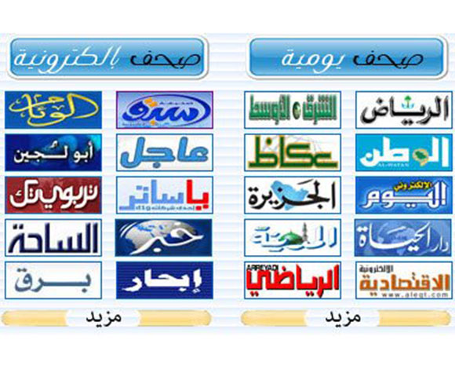

How to Search a Website Directory
When searching for a website, one of the best options is a website directory. A web directory contains listings of websites in various categories. These categories are typically hierarchical and branch out into many subcategories. Web searchers can use these categories to find websites or perform keyword searches. For example, the top level category might be Business and Economy, which would be broken down into the subcategories "Shopping and Services" and "Food and Drinks".
Most web directories will display their categories. The main categories include government, automotive, and health. You can also browse through individual websites by clicking on the category. Jayde, on the other hand, markets itself as a business directory. In addition to search engines, you can also manually browse the categories to find the websites of your interest. You can browse through the categories manually. The categories available on Jayde include agriculture, chemicals, and telecommunications.
A web directory will display web pages based on their Title and Description. These come from the site owner's submission or editor's descriptions. A web directory may not use the HTML title tag to identify its listings, so it is important to choose your search engine carefully. These supplemental results may appear alongside the results from your directory. They are known as fall-through results. The search engines will display results that are related to the one you typed in, which could be a bad idea. عسل سدر كويتي
The most important factor in choosing a website directory is choosing the right categories for your website. The categories you choose must fit the content of the site. The web site content should reflect the type of category you're looking for. However, the content of your site must be similar to those of the other websites listed in the categories. Otherwise, you'll find yourself listed in the same category as your competitors, and the editors of the directory will probably list your site in the same category.
Once you have determined the type of website you're looking for, you should do a keyword search. You can either use a keyword in the title or a URL in the URL. Then, select the directory by category. If you're looking for a website that offers information on a particular topic, you can use a web directory to find it. You can find sites that fit your needs and your budget by browsing through categories.

There are many benefits and disadvantages to using a website directory, but it is important to remember that a web directory can be more useful if it can be viewed as a website directory instead of a search engine. A web directory will allow you to find websites if they're categorized properly. If you don't want to pay for a website listing, you can simply use a free directory. It will help you find the right information, and you won't have to spend any time looking for it.
When searching a website directory, be sure to look for information that's related to the topic. A website directory should be easy to navigate and provide a comprehensive listing of websites. The main advantage of a website directory is that it's more likely to be visited by people who are looking for similar products. This can help increase the likelihood of a visitor finding what they're looking for. So, make sure that you're in a website directory that's easy to use and has the information they need.
Using a website directory is not a substitute for a search engine. It's possible to find websites by using a website directory. It's important to use a website directory, but be aware that they have a number of disadvantages. These include personal bias and a lack of power. A website directory is not a replacement for a search engine. A search engine is the best option for finding information on the internet. تأسيس مصنع
A website directory can be personal and biased. This makes it difficult to find websites related to a particular subject. Fortunately, there are several different types of directories available on the web. Some of them specialize in a particular subject, such as sports. Others are aimed at a specific audience. For example, a shopping directory may specialize in retail e-commerce sites. Some search engines even try to cluster websites by category.